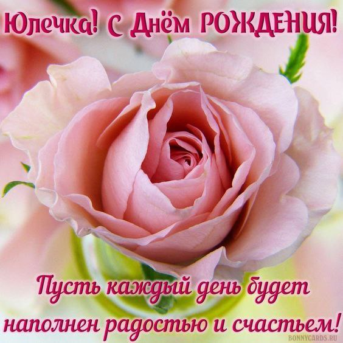
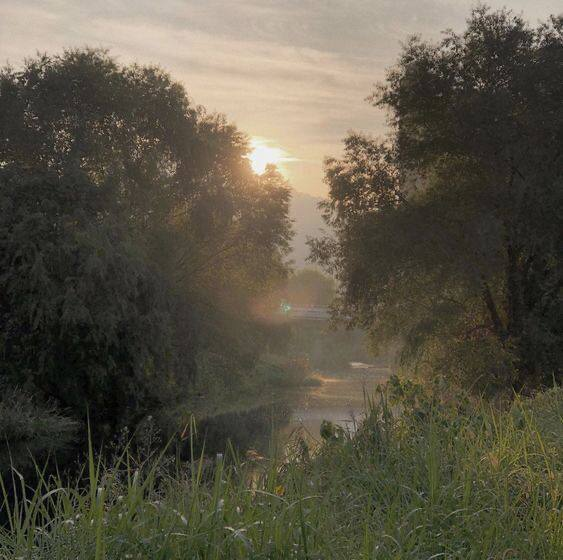
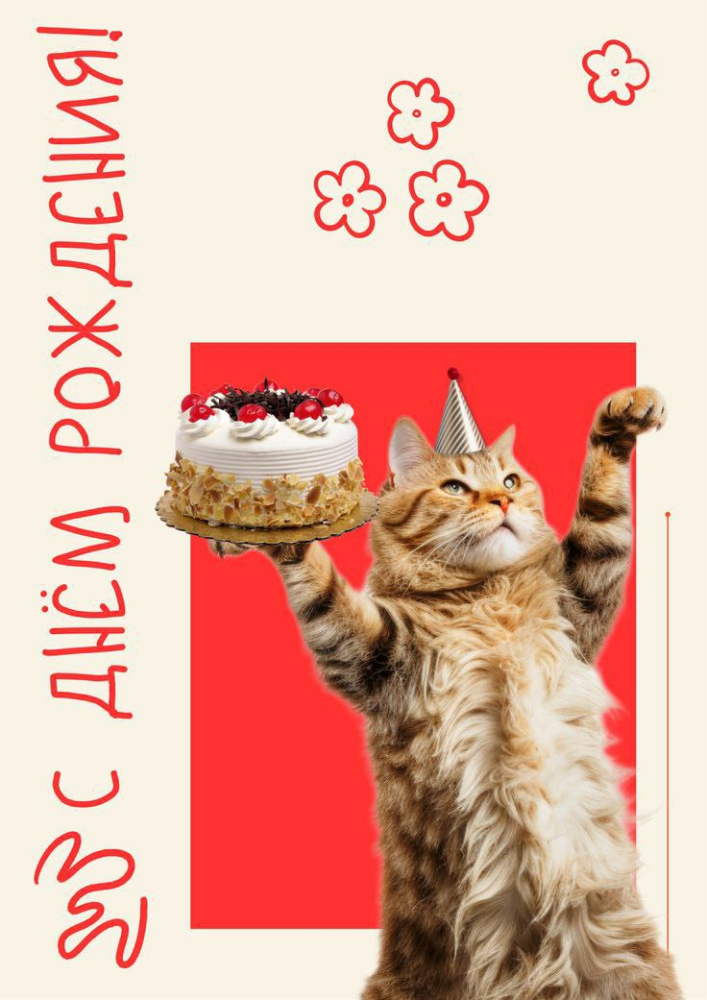

7 июля 2025
В этот замечательный день на свет родилась Юлька. За такое и поздравить можно. Далее вы можете прочитать теплые слова, увековеченные в этом месте :]
Евгения
Дорогая Юлия, в этот прекрасный день хочу поздравить , вам
теперь 17! Я очень тебя люблю, дорожу тобой, ты мой лучик
света;)
Оставайся всегда такой прекрасной, доброй и цветущей. Желаю
всего-всего самого)❤️🔥❤️🔥❤️🔥🫂🫂
Сергей Сергеевич
Юлечка, с Днём рождения!
Ты такой человек, чья доброта и светлый ум украшают этот
мир. Твоя душа – как глубокое море, полное тайн и красоты.
Желаю тебе чтобы тебя окружали верные друзья, любящие
близкие, а твоя жизнь была полна ярких, драгоценных
моментов, любви и счастья, как бриллиант, переливающийся
всеми красками! Каждый день пусть будет наполнен радостью и
вдохновением! Чтобы все твои мечты сбывались!
Русак-беляк
Юля поздравляю с днем рождения! Хочется пожелать всего самого доброго, хорошего и чудесного! Пусть успех сопровождает на жизненном пути, пусть радость каждого дня будет сильнее и глубже. Крепкого здоровья, мира, любви, процветания и душевности, субъективного благополучия, креативности и гармонии. Пусть всё будет хорошо и легко!:)
Андрей Программист
С днём рождения, Юля. Поздравляю тебя с твоим Днём рождения. Давай там оканчивай Бгасик, там 2 года осталось там, ну, здоровья там, вкатывайся в IT программирование, там, не отставай от пути программиста самурая, так что там это, ну, короче, здоровья там, тебе, счастья там. Ну, ты, короче, поняла.
Кристинка
Прекрасная Юля!Я поздравляю тебя с днем рождения 🧸Очень красивое число 07.07. И тебе 17)))Ты очень замечательный для меня человек,таких сильных людей и по настоящему талантливых нужно реально ещё поискать. Желаю тебе всего,что ТЫ действительно хочешь (сполер:потому что так и будет),конечно встретить или построить /сохранить прекрасные взаимоотношения (любого характера) со СВОИМИ людьми.И конечно же просто всегда быть собой -это действительно ценно,тк ты классный и лучезарный человек . Люблю,обнимаю 💋
Ксюша
Дорогая Юлечка! Сегодня особенный день — день, когда мир
стал ярче, потому что в нём появилась ты! Хочу от всей души
поздравить тебя с Днём Рождения. Давай начнём с самого
начала…
Давным-давно, в один прекрасный летний день, когда солнце
светило особенно ярко, а природа праздновала Ивана Купалу,
на свет появилась необыкновенная девочка. Её назвали Юля — и
это имя оказалось пророческим! Ведь оно несёт в себе столько
значений: "волнистая", как твоя непредсказуемая натура,
"пушистая", как твоё доброе сердце, и "июльская" — ведь ты
родилась в самый разгар лета, 7 июля, когда весь мир
купается в солнечном свете!
Недаром великий Юлий Цезарь носил это имя — оно словно
создано для сильных, ярких людей. И ты — тому подтверждение!
Как говорится, «как корабль назовёшь, так он и поплывёт» — и
ты, моя дорогая, плывёшь по жизни с улыбкой, озаряя всех
вокруг!
А теперь — пожелания!🌟
💖 Здоровья крепкого — чтобы никакие болячки не смели даже
приближаться к твоему железному иммунитету!
💰 Денег — много, чтобы ни в чём себе не отказывать (и
запаса сладкого, ведь ты сама — шоколадка!).
🎤 Песен прекрасных — пусть твой чудесный голос радует всех
вокруг!
☀️ Настроения отличного — чтобы никакие «тётки
недотраханные» не портили тебе день.
🧠 Памяти богатырской — чтобы вмещалось всё, что важно, и
даже больше!
🍀 Удачи — огромной, чтобы любые мечты сбывались легко!
❤️ Пусть любовь окружает тебя каждый день — от близких,
родных и друзей!
Пусть этот год будет самым счастливым в твоей жизни! С днём
рождения, Юля!🎂🎉💐
Кира
Сегодня твой день и хочется напомнить тебе, какая ты потрясающая — не только потому, что ты умеешь смеяться над макаронами в раковине или быть высококлассной монашкой, а потому что с тобой не бывает скучно. Пусть сбываются даже те мечты, которые ты пока не решилась вслух произнести, чтобы сердце билось чаще не только от высоты на колесе обозрения, но и от счастья, которое будет поджидать тебя на каждом шагу. Пусть рядом будут люди, которые ценят твоё доброе сердце, преданность и лёгкость, с которой ты делаешь этот мир лучше. Пусть жизнь бережёт тебя от разочарований, а судьба подкидывает только приятные сюрпризы.
Илья
Юля, с Днем рождения!
Желаю здоровья, счастья и исполнения желаний. Пусть каждый
день приносит радость и вдохновение. Окружай себя хорошими
людьми и верь в себя. Всегда думай позитивно, и никогда не
отпускай нос! Ещё раз с днём рождения!😁
Александра
Юлька, С Днем Рождения!!! Желаю тебе счастья, здоровья, любви и исполнения всех заветных желаний. Пусть каждый день будет наполнен яркими красками и приятными событиями. Будь такой же красивой, умной и доброй, какая ты и есть. Пусть твоя улыбка сияет ярче солнца, а глаза искрятся счастьем. Знай, что я бесконечно тебя люблю и всегда буду рядом!
Бро :]
Есть кое-что ещё :]